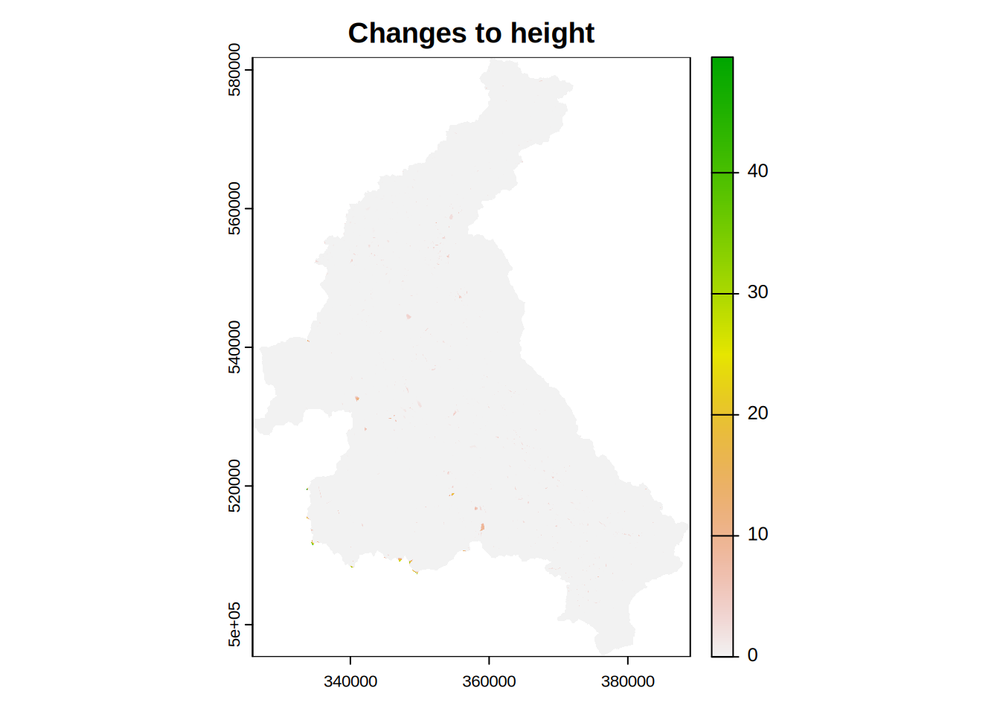
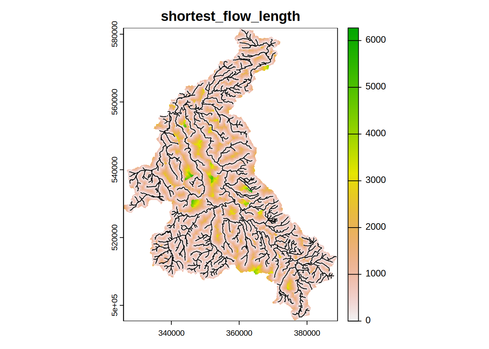

Model Building
Aim
To process the GIS data into a Dynamic TOPMODEL structure of the Eden catchment.
Required R packages
This exercise builds upon the early initial GIS processing, using the outputs generated during that exercise.
The packages used can be attached with
library("dynatopGIS")
library("terra")and remember to move to the eden_data directory e.g.
setwd("../eden_data")Getting started
The dynatopGIS packages works through a number of steps to generate a dynamic TOPMODEL object suitable for use in with the dynatop package. Each step generates one or more layers which are saved as raster or shape files into the projects directory (which is not necessarily the R working directory).
Initialise the analysis by creating a new dynatopGIS object specifying the location of the project directory, which will be created if it doesn’t exist.
ctch <- dynatopGIS$new(file.path(".","dynaGIS"))
#> Starting new project at ./dynaGISIf existing files are present in the directory this step will try to reload them as a dynatopGIS project.
Adding catchment data
The basis of the analysis is a raster catchment map. Onto this a Digital Elevation Model (DEM) of the catchment and a vector representation of the river network with attributes will be added. Currently these can be in any format supported by the terrapackage.
However, within the calculations used for sink filling, flow routing and topographic index calculations the DEM is presumed to be projected so that is has square cells such that the difference between the cell centres (in meters) does not alter.
The catchment map need to be loaded first
ctch$add_catchment( file.path(".","processed","eden.tif") )Either the DEM or channel files can be added to the project next. In this case add the DEM processed during the initial GIS analysis:
ctch$add_dem(file.path(".","processed","dem.tif"))As part of loading the DEM any blocks of NA values within the DEM that fall within the catchment are filled to appear as sinks. These will be filled in a later step.
Adding the channel data is acheived with
ctch$add_channel(file.path(".","processed","channel.shp"))Getting and plotting catchment information
The dynatopGIS class has methods for returning and plotting the GIS data in the project. The names and file locations of all the different GIS layers stored by dynatopGIS is returned by
ctch$get_layer()
#> layer
#> 1 catchment
#> 2 dem
#> 3 channel
#> 4 channel_vect
#> source
#> 1 /home/smithpj1/Documents/Software/dynatop_training/eden_data/dynaGIS/catchment.tif
#> 2 /home/smithpj1/Documents/Software/dynatop_training/eden_data/dynaGIS/dem.tif
#> 3 /home/smithpj1/Documents/Software/dynatop_training/eden_data/dynaGIS/channel.tif
#> 4 /home/smithpj1/Documents/Software/dynatop_training/eden_data/dynaGIS/channel.shpNote that channel_vect layer is the vector representation of teh channel, while channel layer is a rasterised version.
Individual layers can be plotted (with or without the channel), for example
ctch$plot_layer("dem", add_channel=TRUE)
or returned to the R workspace, for example
ctch$get_layer("dem")
#> class : SpatRaster
#> dimensions : 865, 631, 1 (nrow, ncol, nlyr)
#> resolution : 100, 100 (x, y)
#> extent : 325900, 389000, 495350, 581850 (xmin, xmax, ymin, ymax)
#> coord. ref. : OSGB36 / British National Grid (EPSG:27700)
#> source : dem.tif
#> name : dem
#> min value : 9.475
#> max value : 923.425Filling sinks
For the hill slope to be connected to the river network all DEM cells must drain to those that intersect with the river network. The algorithm implemented in the sink_fill method ensures this is the case. In calling the sink_fill method a flow direction algorithm is specified and the resulting flow paths recorded. If subcatchments are present in the catchment map then only flow paths within the subcatchment are considered.
Since the algorithm used by the sink_fill method is iterative and the execution time of the function is limited by capping the maximum number of iterations. If this limit is reached without completion the method can call again with the “hot start” option to continue from where it finished.
For the Eden the DEM is already well conditions and the algorithm only alters a small areas of the catchment.
ctch$sink_fill()
terra::plot( ctch$get_layer('filled_dem') - ctch$get_layer('dem'),
main="Changes to height")
Determining Ordering
The computational scheme in the dynatop package works with an ordered sequence of HRUs constructed such that the sequence moves downslope to catchment outlet. This is acheived by banding the channel reaches and hillslope cells such that the catchment outlet(s) are in band 1, those cells or reaches draining only into band 1 are in band 2 and so forth. Banding is acheived by the following call
ctch$compute_band()
ctch$plot_layer("band")Computing Properties
Two sets of properties are required for Dynamic TOPMODEL. The first set is those required within the evaluation of the Hill slope HRU; gradient and contour length. The second set are those used for dividing the catchment up into different response classes. Traditionally the summary used for the separation of the classes is the topographic index, which is the natural logarithm of the up slope area divided by gradient.
These properties are computed using the formulae in Quinn et al. 1991.
The upstream area is computed by routing down slope with the fraction of the area being routed to the next downstream pixel being proportional to the gradient times the contour length.
The local value of the gradient is computed using the average of a subset of between pixel gradients. For a normal ‘hill slope’ cell these are the gradients to down-slope pixels weighted by contour length.
These properties are computed in an algorithm that passes over the data once in descending height. It is called as follows
ctch$compute_properties()The plot of the topographic index shows a pattern of increasing values closer to the river channels
##plot of topographic index (log(a/tan b))
ctch$plot_layer('atb')
Although not used in ordering the HRUs dynatopGIS also provides the abiliity to compute flow distances for the hill slope cells. The calculation of three istances is supported
- shortest flow length - the shortest length based on the pixel flow paths to a channel
- Dominant flow length - the distance to a channel moving in the dominant (largest fraction) flow direction from any grid cell
- Expected flow length - the distance to the channel based on a weighted average of the down-slope flow lengths. Weights are given by the fraction of flow in each direction.
The computation, in this example for the shortest flow length, is initiated with
ctch$compute_flow_lengths(flow_routing="shortest")The additional layers can be examined as expected
ctch$get_layer()
#> layer
#> 1 catchment
#> 2 dem
#> 3 channel
#> 4 filled_dem
#> 5 band
#> 6 gradient
#> 7 upslope_area
#> 8 atb
#> 9 shortest_flow_length
#> 10 channel_vect
#> source
#> 1 /home/smithpj1/Documents/Software/dynatop_training/eden_data/dynaGIS/catchment.tif
#> 2 /home/smithpj1/Documents/Software/dynatop_training/eden_data/dynaGIS/dem.tif
#> 3 /home/smithpj1/Documents/Software/dynatop_training/eden_data/dynaGIS/channel.tif
#> 4 /home/smithpj1/Documents/Software/dynatop_training/eden_data/dynaGIS/filled_dem.tif
#> 5 /home/smithpj1/Documents/Software/dynatop_training/eden_data/dynaGIS/band.tif
#> 6 /home/smithpj1/Documents/Software/dynatop_training/eden_data/dynaGIS/gradient.tif
#> 7 /home/smithpj1/Documents/Software/dynatop_training/eden_data/dynaGIS/upslope_area.tif
#> 8 /home/smithpj1/Documents/Software/dynatop_training/eden_data/dynaGIS/atb.tif
#> 9 /home/smithpj1/Documents/Software/dynatop_training/eden_data/dynaGIS/shortest_flow_length.tif
#> 10 /home/smithpj1/Documents/Software/dynatop_training/eden_data/dynaGIS/channel.shp
ctch$plot_layer("shortest_flow_length")
Adding additional Layers
Properties for use in the classification of HRUs or for determining input series may be added as additional raster GIS layers.
In the initial GIS analysis a layer for urban area was developed, which processing teh input data produced a map relating to rainfall input. These can now be added to the dynatopGIS project by specifying the file location and name to call the layer.
ctch$add_layer(file.path(".","processed","urban.tif"),"urban")
ctch$add_layer(file.path(".","processed","precip_id.tif"),"precip_id")Calling the get_layer method shows these are added to the project
ctch$get_layer()
#> layer
#> 1 catchment
#> 2 dem
#> 3 channel
#> 4 filled_dem
#> 5 band
#> 6 gradient
#> 7 upslope_area
#> 8 atb
#> 9 shortest_flow_length
#> 10 urban
#> 11 precip_id
#> 12 channel_vect
#> source
#> 1 /home/smithpj1/Documents/Software/dynatop_training/eden_data/dynaGIS/catchment.tif
#> 2 /home/smithpj1/Documents/Software/dynatop_training/eden_data/dynaGIS/dem.tif
#> 3 /home/smithpj1/Documents/Software/dynatop_training/eden_data/dynaGIS/channel.tif
#> 4 /home/smithpj1/Documents/Software/dynatop_training/eden_data/dynaGIS/filled_dem.tif
#> 5 /home/smithpj1/Documents/Software/dynatop_training/eden_data/dynaGIS/band.tif
#> 6 /home/smithpj1/Documents/Software/dynatop_training/eden_data/dynaGIS/gradient.tif
#> 7 /home/smithpj1/Documents/Software/dynatop_training/eden_data/dynaGIS/upslope_area.tif
#> 8 /home/smithpj1/Documents/Software/dynatop_training/eden_data/dynaGIS/atb.tif
#> 9 /home/smithpj1/Documents/Software/dynatop_training/eden_data/dynaGIS/shortest_flow_length.tif
#> 10 /home/smithpj1/Documents/Software/dynatop_training/eden_data/dynaGIS/urban.tif
#> 11 /home/smithpj1/Documents/Software/dynatop_training/eden_data/dynaGIS/precip_id.tif
#> 12 /home/smithpj1/Documents/Software/dynatop_training/eden_data/dynaGIS/channel.shpClassifying into Hydrological Response Units
Methods are provided for the classification of the catchment. The classifications generated in this process must include the “band” layer is the clasification is to be used when generating a dynatop model (see following section).
By definition each channel length is treated as a single class with its own Channel HRU. Two ways are provided for dividing the hill-slope up into classes. The first way is cutting where a landscape property is divided up into classes. The second is combining where unique existing class layers are combined by either by pairing (where unique combinations of classes for a new class) or burning (which enforces classes onto distinct areas).
Cutting
To split a catchment into HRUs using cuts the breaks between the classes need to be specified. The breaks can be specified as either:
- A single value: defines the number of splits which are automatically selected
- A vector of values: treated as the breaks between classes
To demonstrate the use of cuts alone dividing the topographic index into 20 classes. Specifying a single value gives class breaks that are equally spaced across the range of the variable.
## simple equally spaced cuts
ctch$classify("atb_20","atb",20)It is perhaps better to consider 20 classes with approximatly equal land area. it this case the breaks can be computed using the quantiles of the variable
## use the quantile function of the raster package to compute breaks
## note we need to include the min and max
brk <- global(ctch$get_layer("atb"), fun=quantile,probs = seq(0, 1, length = 21),na.rm=T)
ctch$classify("atb_20_equal","atb",brk)In the meta data the cuts and burns used to generate the layer are recorded. These can be retrieved with
head(ctch$get_method("atb_20"))
#> $type
#> [1] "classification"
#>
#> $layer
#> [1] "atb"
#>
#> $cuts
#> [1] 9.5986 10.3730 11.1474 11.9218 12.6962 13.4706 14.2450 15.0194 15.7938
#> [10] 16.5682 17.3426 18.1170 18.8914 19.6658 20.4402 21.2146 21.9890 22.7634
#> [19] 23.5378 24.3122 25.0866
## returns the list of break points for the classesCombining
The sub-catchments could be added alongside the banding to add a further spatial seperation.
ctch$combine_classes("atb_20_subcatch",c("atb_20","catchment"))If this is to be used to generate a model the band layer would have to be included.
ctch$combine_classes("atb_20_subcatch_band",c("atb_20_subcatch","band"))A more complex combination would also include the urban area. Layers burnt into the classification are added after the cuts are applied and treated as directly defined HRUs. In the example it may be desirable to burn in the Urban areas since these will have a different hydrological behaviour.
Since the layer burnt in are applied with no alteration to their values the values specified may clash with those already defined by the cuts. One method that nearly always avoid this is to burn in classes with negative values. Let us then adapt the urban layer to have negative values.
tmp <- -ctch$get_layer("urban")
writeRaster(tmp,file.path(".","processed","neg_extended_eden.tif"),overwrite=TRUE) ## write out
ctch$add_layer(file.path(".","processed","neg_extended_eden.tif"),"neg_urban")then burn this into the existing classification based on the topographic index and subcatchment
ctch$combine_classes("atb_20_subcatch_band_burn_neg_urban","atb_20_subcatch_band",burns="neg_urban")In the meta data the classes of the original class values in the combination are stored These can be retrieved with
tmp <- ctch$get_method("atb_20_subcatch")
tmp$type
#> [1] "combination"
head(tmp$groups)
#> atb_20_subcatch atb_20 catchment burns
#> 1 1 1 76003 FALSE
#> 2 2 2 76003 FALSE
#> 3 3 3 76003 FALSE
#> 4 4 1 76005 FALSE
#> 5 5 4 76003 FALSE
#> 6 6 2 76005 FALSE
## returns the list of break points for the cuts and layers burnt inComplexity
The number of Hill-slope classes resulting from the classifications reflects the complexity of the model. The number of Hill-slope classes can be computed from the maps and is shown in the following table. Since these classes may occur in any of the bands the total number of HRUs the upper limit on the number of hill-slope HRUS can be approximated by multiplying the number of classes by the number of bands.
| classification | Classes | HRU |
|---|---|---|
| atb_20 | 20 | 3744 |
| atb_20_subcatch | 136 | 13878 |
| atb_20_subcatch_band_burn_neg_urban | 166 | 13826 |
Generating a dynamic TOPMODEL
A Dynamic TOPMODEL suitable for use with the dynatop package can be generated using the create_model method. This uses an existing classification to generate the model.
For example, in the case of the division of by topographic index into 21 classes and the bands directly the resulting model can be generated by
ctch$create_model(file.path("./dyna","atb_20_model"), # name of new model
"atb_20_band", # classification to base model on
sf_opt="cnst",
sz_opt="exp",
rain_layer = "precip_id", # layer of input precipitation series ID
rain_label = "precip_" # characters added to values in rain_layer to get series name
)Looking at the files within the folder containing the dynatopGIS project
list.files(file.path("./dyna"),pattern="atb_20_model")
#> [1] "atb_20_model.rds" "atb_20_model.tif"shows that an additional raster map of the HRUs has been created in atb_20_model.tif along with a file atb_20_model.rds containing a model suitable for dynatop
Looking at the dynatopGIS model output
The model output by dynatopGIS should be adequate for dyantop to run, but may not exactly match the representation of the catchment required. Looking at the output in more detail shows atb_20_model.rds contains three variables.
## load the model
mdl <- readRDS( file.path(".","dyna","atb_20_model.rds")) ## read the model in
names(mdl)
#> [1] "hru" "output_flux" "map"The map variable contains the path of the HRU map.
mdl$map
#> [1] "./dyna/atb_20_model.tif"The hru variable contains a description of the HRUs. This is given as an list, with each list element representing the properties of one HRU.
names(mdl$hru[[8]])
#> [1] "id" "states" "properties"
#> [4] "sf" "rz" "uz"
#> [7] "sz" "sf_flow_direction" "sz_flow_direction"
#> [10] "initialisation" "precip" "pet"
#> [13] "class"A summmary of properties is given below, detailed desriptions are found in the dynatop vignettes
| Name | Class | Description |
|---|---|---|
| id | integer | The unique ID of the HRU |
| states | numeric | Named numeric vector of states |
| properties | numeric | Named numeric vector of properties |
| sf | list | Description of the surface zone solution |
| rz | list | Description of the surface zone solution |
| uz | list | Description of the unsaturated zone solution |
| sz | list | Description of the saturated solution |
| sf_flow_direction | list | Description of the surface zone outflows to other HRUs |
| sz_flow_direction | list | Description of the saturated zone outflows to other HRUs |
| initialisation | numeric | Named numeric vector of initialisation parameters |
| precip | list | Description of the precipitation input to the HRU |
| pet | list | Description of the PET input to the HRU |
| class | list | Classification information from dynatopGIS |
The output_flux variable contains a table in the format used in a call to a dynatop simulation to set the time series output.to set the
mdl$output_flux
#> name id flux
#> 1 q_sf_0 0 q_sf
#> 2 q_sf_1 1 q_sf
#> 3 q_sf_2 2 q_sf
#> 4 q_sf_3 3 q_sf
#> 5 q_sf_4 4 q_sfBy default dynatopGIS populates this to return the lateral outflows of the surface zones (flux column set to q_sf) of the catchment outlets (HRU number in the id column) giving then representative names.
This can be replaced by the locations of the river gauges found in the inital GIS processing.
## To replace this read in the gauge locations generated mealier
gauges <- vect(file.path(".","processed","gauges.shp"))
## create a vector of the uid's of the HRUs
hid <- sapply(mdl$hru,function(h){h$id})
## create a vector of the channel names with as storaged in the class variabel
cname <- sapply(mdl$hru,function(h){h$class$name})
idx <- match(gauges$chn_identi,cname) ## index of HRU's corresponding to gauges
## create as a data.frame
gauge_output <- data.frame(name = gauges$Site.Name,
id = as.integer(hid[idx]),
flux = "q_sf",
scale = 1)
saveRDS(gauge_output,file.path(".","dyna","gauge_output_defn.rds")) ## save the output for later use
gauge_output
#> name id flux scale
#> 1 Bampton Grange 1632 q_sf 1
#> 2 Burnbanks 1787 q_sf 1
#> 3 Coal Burn 1382 q_sf 1
#> 4 Cummersdale 53 q_sf 1
#> 5 Dacre Bridge 1241 q_sf 1
#> 6 Eamont Bridge 1167 q_sf 1
#> 7 Great Corby 246 q_sf 1
#> 8 Greenholme 274 q_sf 1
#> 9 Harraby Green 14 q_sf 1
#> 10 Hynam Bridge 565 q_sf 1
#> 11 Kirkby Stephen 2157 q_sf 1
#> 12 Newbiggin Bridge 35 q_sf 1
#> 13 Pooley Bridge Upstream 1341 q_sf 1
#> 14 Sheepmount 1 q_sf 1
#> 15 Stockdalewath 282 q_sf 1
#> 16 Temple Sowerby 1064 q_sf 1
#> 17 Udford 985 q_sf 1